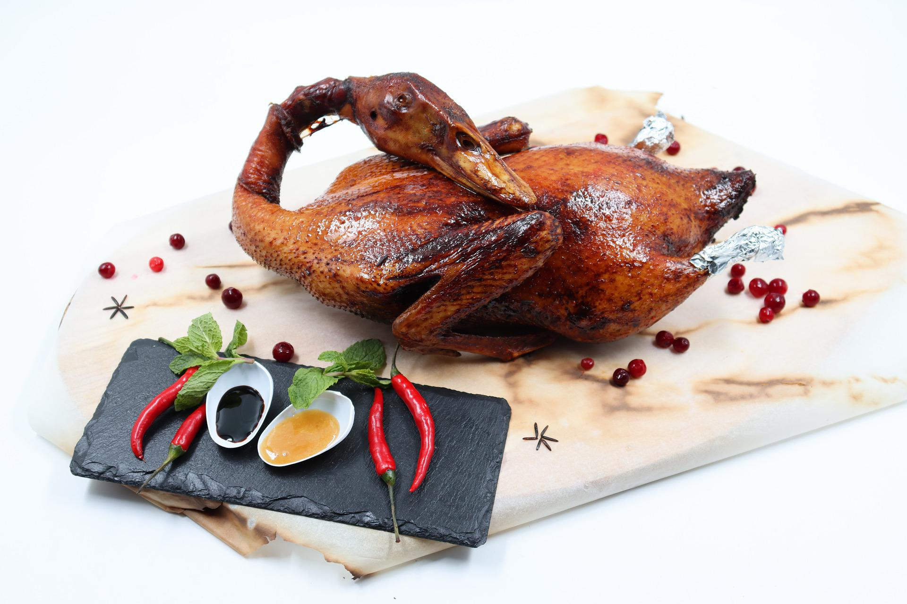

Peking Duck

Description
Peking Duck is a dish from Beijing (Peking) that has been
prepared since the Imperial era.
The meat is characterized by its thin, crispy skin, with authentic
versions of the dish serving mostly the skin and little meat, sliced in front
of the diners by the cook.
Ingredients
- 1 (4 pound) whole duck, dressed
- 1/2 teaspoon ground cinnamon
- 1/2 teaspoon ground ginger
- 1/4 teaspoon ground nutmeg
- 1/4 teaspoon ground white pepper
- 1/8 teaspoon ground cloves
- 3 tablespoons soy sauce, divided
- 1 tablespoon honey
- 5 green onions, divided
- 1/2 cup plum jam
- 1/4 cup finely chopped chutney
- 1½ teaspoons sugar
- 1½ teaspoons distilled white vinegar
- 1 orange, sliced in rounds
- 1 tablespoon chopped fresh parsley, for garnish
Steps
- Rinse duck inside and out; pat dry. Cut off tail and discard.
-
Mix together cinnamon, ginger, nutmeg, white pepper, and cloves in a small bowl.
Sprinkle 1 teaspoon spice mixture into cavity of duck.
Stir 1 tablespoon soy sauce into remaining spice mixture
and rub evenly over entire outside of duck.
Cut 1 green onion in half and tuck it inside cavity.
Cover and refrigerate duck for at least 2 hours or up to overnight.
- Place duck breast-side up on a rack set in a wok or pot.
Steam for 1 hour, adding more water as it evaporates.
Lift duck with two large spoons to drain juices and green onion.
Place duck breast-side up in a roasting pan and prick skin all over with a fork.
-
Preheat the oven to 375 degrees F (190 degrees C).
-
Roast duck in the preheated oven for 30 minutes.
-
Mix together remaining 2 tablespoons soy sauce and honey in a small bowl.
Brush honey mixture onto duck.
-
Increase the oven temperature to 500 degrees F (260 degrees C).
Roast until skin is richly browned, about 5 minutes.
Do not allow skin to char.
-
Mix together plum jam, chutney, sugar, and vinegar in a small serving bowl.
Chop remaining green onions and place them into a separate bowl.
-
Place whole duck onto a serving platter and garnish with orange slices and fresh parsley.
Serve with plum sauce and chopped green onions.